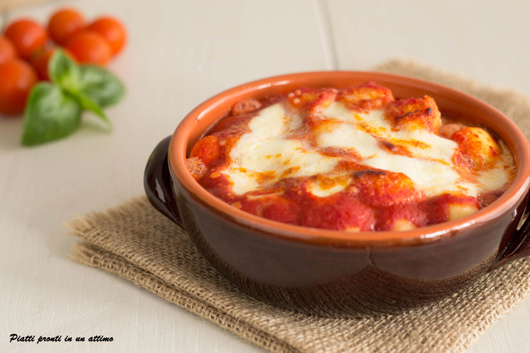

Gnocchi alla Sorrentina

Descrizione del piatto
Se vuoi portare in tavola un primo piatto semplice, ma buonissimo, prova gli GNOCCHI ALLA SORRENTINA:
una ricetta tipica della tradizione culinaria campana che è conosciuta in tutta Italia ed all’esterno per il suo sapore genuino ed irresistibile.
Spesso, come in questo caso, bastano davvero pochi e semplici ingredienti per poter gustare un’ottima pietanza:
patate, pomodori, basilico ed una buona mozzarella. Insomma, ingredienti economici che sono alla base della fortuna di uno dei piatti più amati della cucina italiana.
Ingredienti
- 600 g Gnocchi di patate
- 400 ml di Passata di pomodoro
- 200 g di Mozzarella
- 1 spicchio di Aglio
- 1 foglia di Basilico(fresco)
- 50 g di Parmigiano reggiano(grattugiato)
- q.b. di Olio extravergine d'oliva
- q.b. di Sale
- q.b. di Pepe
Procedimento
- Metti a scaldare l’acqua con il sale in una pentola di grandi dimensioni per farvi poi cuocere gli gnocchi; contemporaneamente accendi il forno che dovrà raggiungere la temperatura di almeno 230° C.
- Poni sul fuoco una padella con un filo d’olio e fai rosolare lo spicchio d’aglio intero fino a quando non inizierà a dorarsi, quindi togli l’aglio dall’olio.
- Inserisci nella padella la passata di pomodoro e spezzavi dentro le foglie di basilico; fai cuocere per qualche minuto a fiamma bassa. Nel frattempo, taglia la mozzarella in cubetti di piccole dimensioni.
- Quando l’acqua andrà in ebollizione versavi gli gnocchi; appena gli gnocchi inizieranno a venire a galla scolali con una schiumarola.
- Subito dopo aver scolato gli gnocchi, mettili in 4 terrine monoporzione; versavi sopra la passata di pomodoro insaporita con il basilico ed un filo d’olio extravergine d’oliva, cosparvi sopra il parmigiano grattugiato ed aggiungi i cubetti di mozzarella.
- Metti le terrine con gli gnocchi alla sorrentina nel forno preriscaldato a 250° C per 5 minuti. Una volta ultimata la cottura, servi in tavola gli gnocchi ben caldi.